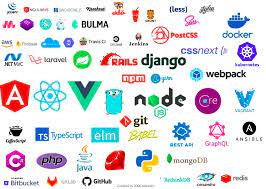
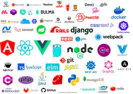

Tecnologías Web
Las tecnologías web han evolucionado significativamente en los últimos años, permitiendo experiencias más ricas y dinámicas.
Las tecnologías web han evolucionado significativamente en los últimos años, permitiendo experiencias más ricas y dinámicas.
| Lenguaje | Descripción |
|---|---|
| HTML5 | El estándar más reciente del lenguaje de marcado para la creación de páginas web. |
| CSS3 | El estándar más reciente del lenguaje de estilos utilizado para describir la presentación de un documento HTML. |
| JavaScript | Un lenguaje de programación que permite implementar funciones complejas en páginas web. |
| Python | Un lenguaje de programación popular que se utiliza tanto en el backend como en el desarrollo de aplicaciones web. |
| PHP | Un lenguaje de scripting de servidor diseñado específicamente para el desarrollo web. |
| Ruby | Un lenguaje de programación dinámico y de propósito general, conocido por su simplicidad y productividad. |